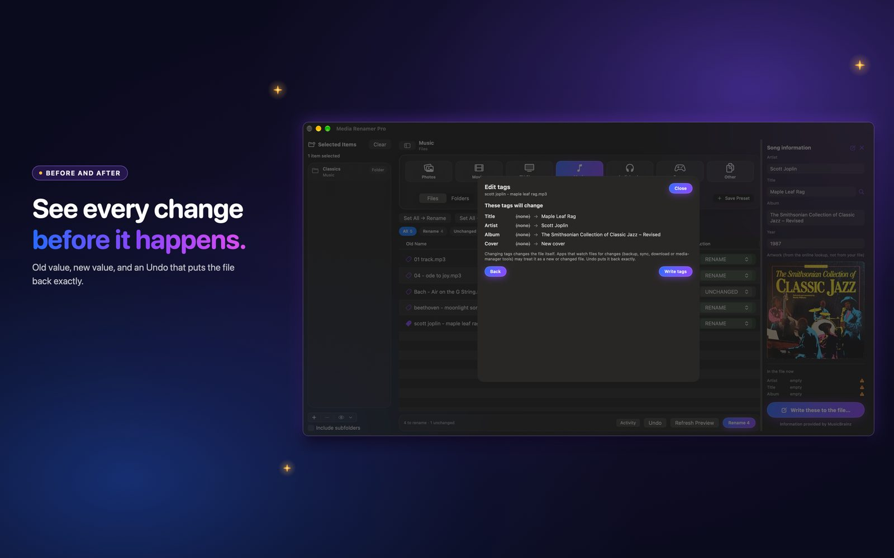

How to clean junk tags and fill the blanks
Tags full of junk, or no tags at all. Clean them to a blank slate, or fill the empty ones. You see every file first.
 By Buck Kettering· October 30, 2026· Applies to version 2.0
By Buck Kettering· October 30, 2026· Applies to version 2.0
Three tools, one habit
All three work the same way. Right-click rows in the preview, choose the tool, read the list of every file and what will happen, then apply. One Undo reverses the whole job. They all need the Tag editor switched on in Settings, General, Tags.
Good to know: Changing tags changes the file itself. Apps that watch files for changes (backup, sync, download or media-manager tools) may treat it as a new or changed file. Undo puts it back exactly.
Clean tags: a blank slate
Choose Clean tags for the selected rows, or Clean tags in all files for the whole preview. It wipes the tags. The cover art stays unless you tick Also remove cover art.
- MP3: the ID3 frames are blanked, and trailing old tags are cut off.
- MP4, M4A, M4B, M4V: the tag list is emptied.
- MKV and WebM: the tags block is voided. Subtitle fonts and other attachments always stay.
Types that cannot be cleaned yet, such as FLAC, OGG, MOV and AVI, are listed per file as cannot be cleaned, and are left alone.

Fill tags from filename
When the name is right and the tags are empty, copy the name into the tags. Choose Fill tags from filename, or press Fill from filename inside the Edit tags panel.
| Type | What gets filled |
|---|---|
| Music (MP3, M4A) | Title and artist |
| Audiobooks (MP3, M4A, M4B) | Author, book and title. Names that look like a chapter, such as Chapter, Part, Disc or a number, get the author only. |
| Movies (MP4, M4V, MKV, WebM) | Title and year |
| TV (MP4, M4V, MKV, WebM) | Show, season and episode. Ranges like S03E01-E02 are not guessed. |
Blank tags only. A value that is already there is never replaced.
Fill tags from lookup
Choose Fill tags from lookup and the app looks the file up online and writes what is missing. It only uses confident matches, where the title agrees exactly and, for music, the artist agrees too. Anything less is skipped, so a guess never lands in your tags.
- Music: title, artist, album, year and cover.
- Movies: title, year and cover.
- TV: show, season, episode, episode name and cover.
Again, blank tags only. A cover is added only when the file has none. If the lookup service is busy, the file is skipped and you can run it again later.
A good order
- Fix the names first and apply the rename.
- Clean tags if the old ones are junk.
- Fill from filename for the basics.
- Fill from lookup for album, year and covers.
Try it on a small folder first. See workflows for 2.0 for the full walk-through.